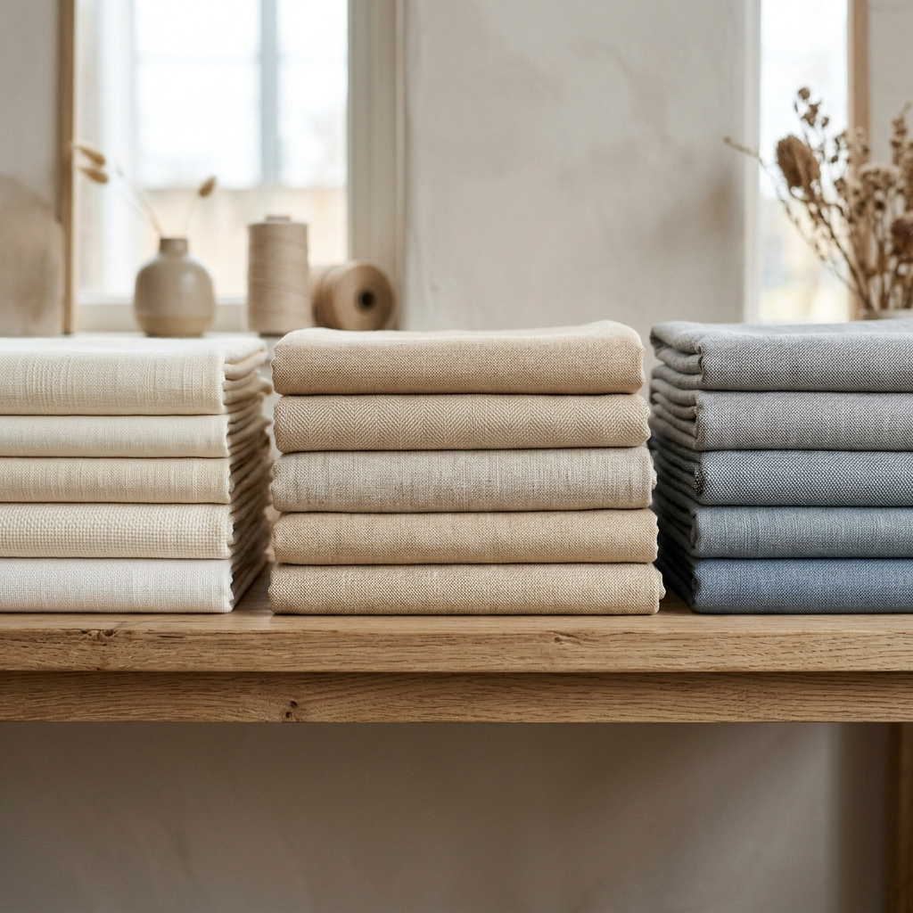

Premium Cotton Grey Fabrics manufactured using advanced Picanol Air Jet Loom technology, with capabilities spanning dobby fabrics, double cloth constructions, seersucker fabrics, and tailor-made fabric solutions.
Every fabric is produced under direct supervision of experienced technicians and management.
Orders are carefully analysed and production schedules are meticulously crafted for optimal output.
Premium cotton yarns sourced from trusted suppliers, tested for count, strength, and consistency.
Precision warping and sizing processes ensure uniform tension and optimal loom performance.
Fabric is woven on advanced Picanol OmniPlus 800 Air Jet Looms with electronic dobby control.
Every metre of fabric undergoes rigorous quality checks for defects, density, and dimensional accuracy.
Finished fabrics are carefully packed and dispatched to domestic and international destinations on schedule.
Premium cotton grey fabrics in a wide range of constructions and weave patterns.
Intricate geometric patterns woven on electronic dobby looms for rich surface texture and visual depth.
SPECIALTYTimeless fabric constructions offering durability and versatility for a wide range of end-use applications.
CLASSICTwo-layered fabric constructions providing enhanced weight, warmth, and a luxurious hand feel.
PREMIUMDistinctive puckered textures and creative weave innovations for designer and fashion-forward applications.
DESIGNERTwo decades of textile manufacturing excellence
Picanol OmniPlus 800 Air Jet Looms
Rigorous quality control at every stage
IEC registered with global shipping capabilities